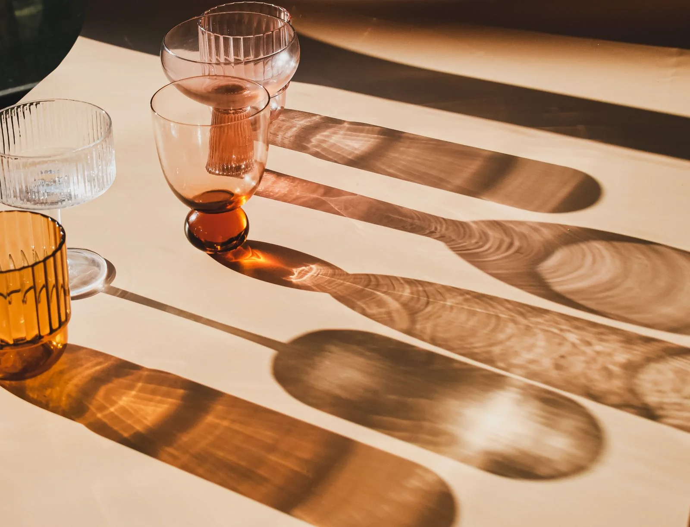

MAJACEITE
EL BAR
DEL PUEBLOUna invitación
a conocernos.

Nombre de aquí.
Ganas de venir.
Somos Bar Majaceite, en El Bosque. Un bar con una carta que reúne pescado, carnes en salsa y vinos.
La trucha a la plancha o al horno y el venado en salsa forman parte de la oferta publicada. Empieza por conocerla y, si quieres saber qué hay disponible hoy, habla directamente con el bar.
a la carta
02 / ¿QUÉ TE APETECE?
Vamos
al plato.
Una selección de la carta publicada de Bar Majaceite.
Dos maneras de pedir la trucha, carnes en salsa y otras propuestas para elegir. Consulta con el bar la disponibilidad y los precios actuales.
Abrir carta publicadaLa carta enlazada es externa y puede cambiar. Para ingredientes, alérgenos y oferta del día, consulta directamente con el establecimiento.
Consultar al barAquí tienes
la dirección.
Guarda el nombre, abre el recorrido
y acércate a Bar Majaceite.
BAR MAJACEITE
CALLE JAÉN, 3111670 EL BOSQUE, CÁDIZCÓMO LLEGAR
Abre la dirección en Google Maps.
CONTACTO / DIRECTO CON EL BAR
Hablamos
y te acercas.
Consulta el horario de hoy, los platos disponibles o cualquier detalle antes de venir.
655 360 519Antes de salir.
¿Cómo consulto el horario?
Llama al 655 360 519 para confirmar el horario del día y la apertura de cocina antes de desplazarte.
¿Dónde puedo consultar la carta?
Puedes abrir la carta digital publicada en Odibo. Confirma con el bar los platos disponibles, los precios y la información de alérgenos.
¿Las fotografías son del bar?
Son fotografías ilustrativas de hostelería. No muestran Bar Majaceite ni sus platos. Puedes consultar los autores y las licencias en los créditos de esta página.